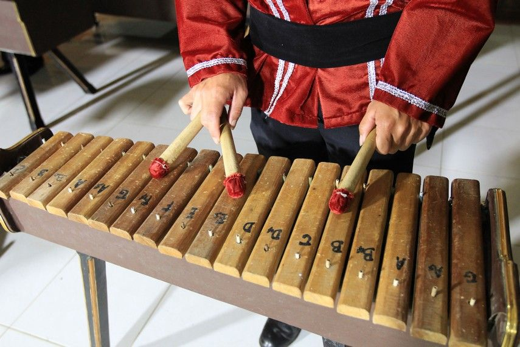

Mengenal Sasando, Kolintang, dan Talempong
Setiap daerah di Indonesia punya cara sendiri untuk menciptakan bunyi. Bahan yang dipakai biasanya berasal dari alam sekitar, mulai dari daun lontar, kayu, sampai logam. Berikut tiga contohnya.
Sasando
Sasando berasal dari Pulau Rote, Nusa Tenggara Timur. Bentuknya unik karena badan alat ini berupa tabung bambu yang dililit dawai, lalu dibungkus anyaman daun lontar berbentuk kipas yang berfungsi sebagai penguat suara.

Secara garis besar, sasando dimainkan dengan urutan berikut:
- Pemain duduk dan memegang sasando di depan badan.
- Tangan kiri menekan dan menahan dawai untuk menentukan nada.
- Tangan kanan memetik dawai dengan jari.
- Suara dari dawai diperkuat oleh daun lontar di sekelilingnya.
Kolintang
Kolintang berasal dari Minahasa, Sulawesi Utara. Alat ini tersusun dari bilah-bilah kayu yang disusun berderet menurut tinggi rendah nadanya, lalu dipukul dengan tongkat kecil. Biasanya kolintang dimainkan bersama-sama dalam satu kelompok, dan tiap alat mendapat bagian nada yang berbeda.

Talempong
Talempong berasal dari tanah Minangkabau, Sumatera Barat. Alat ini berbentuk gong kecil yang terbuat dari logam, dipukul dengan kayu. Talempong sering tampil dalam acara adat dan penyambutan tamu, dan dimainkan beberapa orang sekaligus untuk menghasilkan jalinan nada.